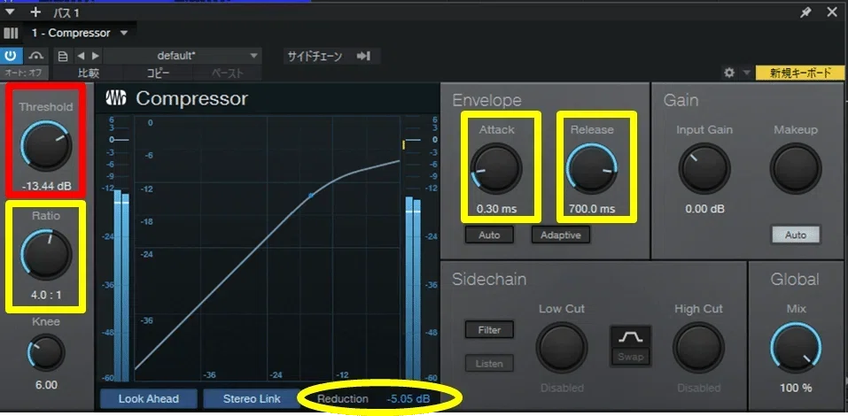
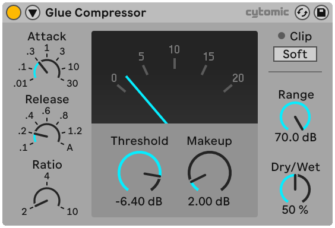

3つの音を
1本のローエンドにする
前の STEP で、キック・トップベース・サブベースがそれぞれ完成しました。
ここからは、その3つを「1本のローエンド」として統合するフェーズです。
パン／リバーブで空間を整える
すべてセンター固定。空気感だけを揃える。
LOW BUS で Glue をかける
コンプで“同じ呼吸”をさせる。
ローエンド最終チェック
モノラル／小音量で崩れないか確認する。
パン／リバーブで空間を整える
キック・サブベース・トップベース。ローエンドは定位がズレると即濁ります。 例外なし。
リバーブは「空気の統一」だけを目的に
| トラック | リバーブ Mix | 理由 |
|---|---|---|
| トップベース | 3〜6% | 前に出すぎを防ぐ |
| サブベース | 基本ゼロ | 低域は広げない |
| キック | 完全ドライ | アタックを守る |
目的は広げることではありません。 トップベースだけが前に出すぎないよう、空気感を薄く揃えるだけです。
パンとリバーブが揃ったら、手順①はクリアです。
LOW BUS で Glue をかけ、
ローエンドを1本化する
ここが今回の核心です。
キック ＋ トップベース ＋ サブベース を LOW BUS にまとめる。
DAW のグループ / バス / サブミックス機能を使って3トラックを1つの Bus へルーティング。 これでローエンド全体を1本のフェーダーで動かせる状態になります。
「3つの音」から「1本の塊」に変わります。
Glue コンプの設定値
| パラメータ | 設定値 | 意味 |
|---|---|---|
| アタック | 0.3ms | キックのアタックを潰さず自然に通す |
| リリース | 500〜700ms | 次のキックまでにゆっくり戻る |
| レシオ | 4 : 1 | キックとベースをしっかり一体化 |
| ゲインリダクション | −5dB 前後 | キックの瞬間にベースごと呼吸が揃う |


DAWによってノブの見た目は全く違いますが、やることはどの DAW でも同じです。 アタックを速く、リリースを遅く、レシオを 4:1。そしてメーターが −5dB 前後振れているかだけを見る。
※ Glue コンプがなければ、DAW付属のコンプで構いません。

DAW付属コンプで代替
アタック 0.3ms／リリース 500〜700ms／レシオ 4:1／GR −5dB前後 を再現できれば、どのコンプでも構いません。
Ableton Live 付属 Compressor
手順③で使うサチュレーター
LOW BUS の最後に薄くかけて、ローエンドを“見えやすく”する。
Ableton Live 付属 SaturatorGlue で何が変わるか
Before ── Glue なし
バラバラに動く
- キックとベースが別々に動く
- ローエンドがバラバラに聴こえる
- 低域が濁り、前に出ない
After ── Glue あり
同じ呼吸で動く
- キックとベースが同じ呼吸で動く
- ローエンドが“1本の塊”に
- 低域が太く・安定し、前に出る
リリース 500〜700ms × −5dB GR は、 ダンスミュージックの「どっしりしたローエンド」を作る黄金設定です。
LOW BUS の Glue が設定できたら、手順②はクリアです。
ローエンド最終チェックを行う
仕上げとして3つの確認をします。
1. モノラルチェック
ローエンドが崩れないかを確認します。
| DAW | やり方 |
|---|---|
| Ableton Live | Master に Utility を挿して Mono ボタン ON |
| Studio One | Master の Mono アイコンをクリック |
| FL Studio | Master の Stereo Separation を右へ（Mono方向） |
| Logic | Stereo Output の Gain → Mono ON |
- キックとベースのバランスが変わっていないか
- ローエンドが急に痩せたり消えたりしていないか
ローエンドにステレオ処理がかかりすぎている証拠です。
2. 小音量チェック
音量を極端に下げて、キックの輪郭とベースの存在感が残っているか確認します。 スマホ・AirPods でも強い曲になるかどうかです。
ローエンドの土台がまだ弱い状態です。
3. LOW BUS にサチュレーションを微量だけ
LOW BUS の最後にサチュレーションを薄くかける。 ドライブを上げ、気持ち前に出た瞬間から少し戻すだけ。 ローエンドが“見えやすく”なり、存在感が整います。
存在感を整えることであって、音を変えることではありません。
3つのチェックが終わったら、手順③はクリアです。
この STEP で手に入れたもの
- パン・リバーブで空間の空気を揃えた
- LOW BUS で Glue をかけてローエンドを1本化した
- モノラル・小音量・サチュレーションで最終安定化した
つまり、“3つの音がひとつのローエンドとして動く状態”が完成しました。
STEP2 のローエンド設計が、すべて完成しています。
サポートラインに「STEP2 完了」と送ってください。
【STEP2完了報告】ローエンド設計 キックのサンプル名： BPM / Key： トップベースの音色： サブベースの音色： LOW BUS の Glue 設定 → できた / 質問あり モノラルチェック → 崩れなかった / 崩れた 小音量チェック → 残った / 消えた
“ノリを決める”
ドラムスの構築へ
次の【STEP3】では、“ノリを決める”ドラムスの構築に進みます。
次の工程は驚くほどスムーズになります。
次の STEP でお会いしましょう。ではまた。
押すとHUBの進捗％に反映されます。